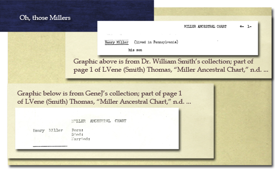

Home >
BetterGEDCOM Sandbox >
BetterGEDCOM Test Suite >
GJ Cases > Oh, those Millers
Oh, those Millers: Hazards of assumptions about a source you "know" but technically have never seen.
Dr. William Smith, a well-known author and geneablogger, is my cousin, and we have collaborated over the years about a Miller line. LVene (Smith) Thomas (1910-2004), another cousin, had researched this line extensively. She had shared her manuscript, "Miller Ancestral Chart," with both of us. I received my copy in 1997. [1] LVene's work is extensive (+/-30 pages). Anyone who has researched a Miller line understands the value of collaboration with someone who has long researched a line.
Over the many years that Bill and I collaborated, we exchanged a great number of e-mails and research notes or reports, frequently referencing LVene's manuscript. When I documented the various research from Bill, I would include his credit line (cites LVene's "Miller Ancestral Chart" manuscript...).
Not long after LVene's death, Bill and I found ourselves communicating with a third party about an early 1800s marriage ... both of us were citing LVene's "Miller Ancestral Chart" manscript. In the third party round-robin exchange, we realized our record data differed about that early 1800s marriage. Out came our copies and digitized images. It did not take long for us to realize we had different manuscripts--same author, same title, neither dated, different content (or at least not identical content). LVene would have gotten a big kick out of this, I'm sure.

Today Bill Smith and I know we have different manuscripts, and we understand a little better why they are different, but for 10 years, we were happy and ignorant "between cousins" to exchange information that referenced LVene's treasured work ... err works.
Comment
(1) Assumptions "about the source" you haven't seen are hazardous.
(2) Users desire to name/title their master source by a means other than a document title (be that published, quoted or generic).
(3) Minor nuances about a source are not so minor when it comes time to identify the source
[1] LVene (Smith) Thomas, "Miller Ancestral Chart," n.d. [c1997], 26 pp., supplied by Thomas (1910-2004), Iowa, correspondence to GJ, 1997; based on her research about the descendants c1935-1997. According to her son, XXX, the obituaries, wills and other documents LVene saved are maintained in three ring binders, which he inherited upon her death [interview of XXX, February 2008]; the collection includes only some of the many letters she received from relatives over the years.